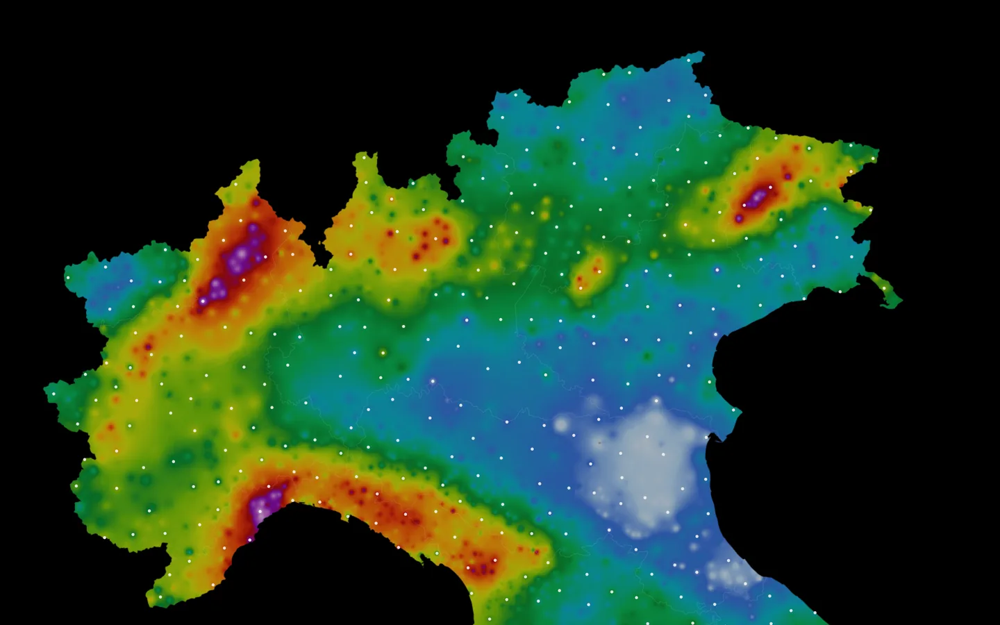
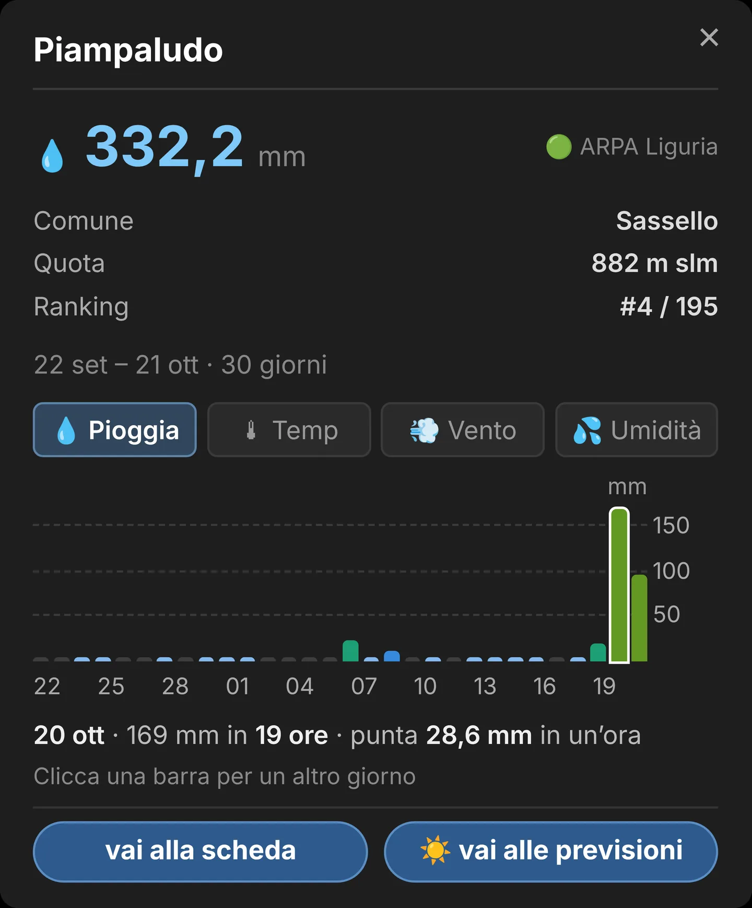
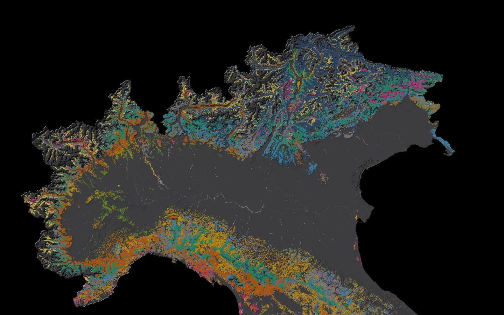
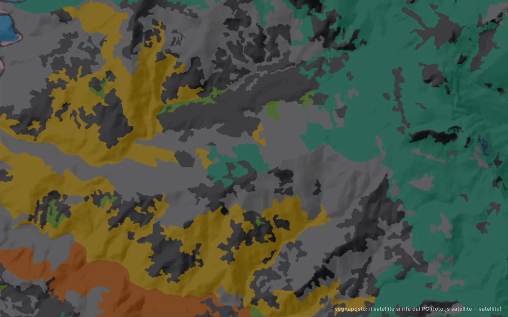
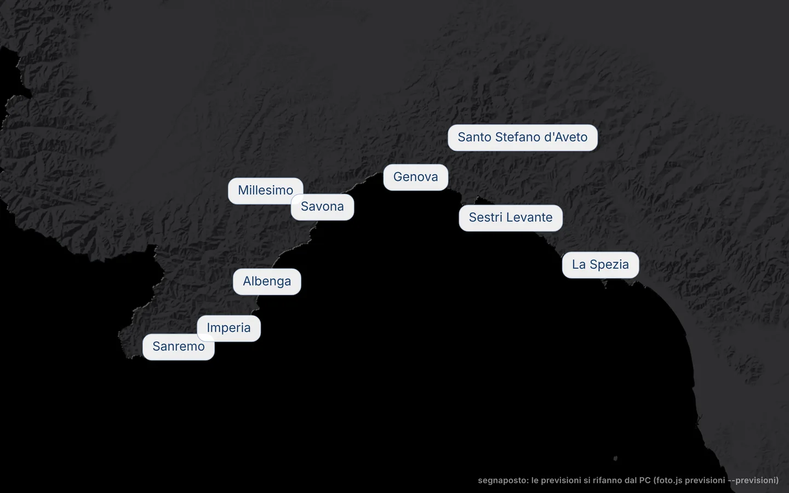

Dove è piovuto davvero.
La mappa dei pluviometri veri, stazione per stazione.
Nel film: la pioggia misurata dal 22 settembre al 21 ottobre 2026, poi i boschi della Liguria e le sue previsioni.
È piovuto qui.
I millimetri misurati dai pluviometri delle agenzie regionali. Più di 5000 stazioni, in 5 nazioni: Italia, Svizzera, Austria, Francia e Slovenia.
Apri la pioggia del Nord, 30 giorni · Le località più bagnate

Ogni stazione, giorno per giorno.
Tocca un pallino: grafico della pioggia, della temperatura, del vento e dell'umidità.

Sui boschi giusti.
La stessa terra, con i boschi: faggete, castagneti, querceti, abetaie, lariceti e pinete, dalle carte forestali delle Regioni.

Come sono davvero.
Sotto i boschi, il satellite: ti avvicini fino a vedere le chiome degli alberi.

E i prossimi giorni.
Hai visto dove è piovuto e su quali boschi. Ora guarda il tempo dei prossimi sette giorni, ora per ora: temperatura, pioggia, probabilità e vento.

Gratis.
Senza pubblicità.
Senza registrazione.
E poi ci siamo noi.
Quiz esame tartufi.
Le domande del tesserino, in un gioco. Domande ufficiali per Campania, Lazio, Marche e Toscana; per le altre quattro regioni, esempi elaborati sui testi di studio. Gratis, senza registrazione, anche dal telefono.
Le regioni: Lombardia · Piemonte · Emilia-Romagna · Liguria · Campania · Lazio · Marche · Toscana